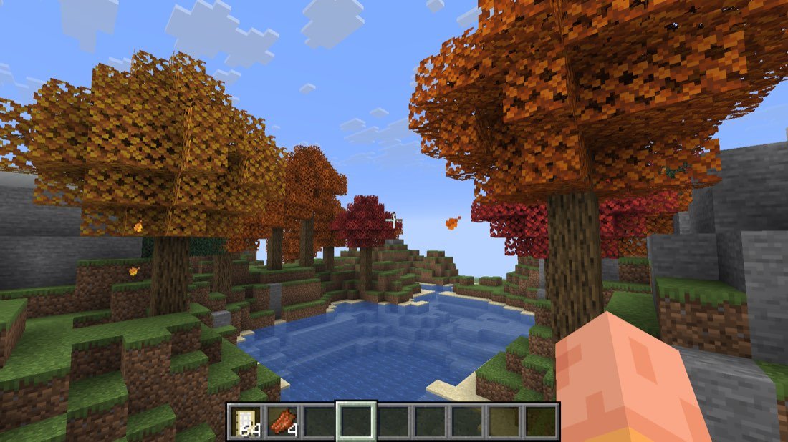

← マインクラフトで試してみた (7 / 7)
7. ゲームと同じ形の木を置いてみた
2026-11-15〜17 に、風景の木を、マインクラフトの木と同じ形と大きさにして置きました。本体の「木の形」の欄で「マインクラフトの木」を選んだときの木です (はじめに選ばれているのは「小さな緑の木」です)。
形の合わせ方
マインクラフトのサーバー版で本物の木を生やし、原木と葉がどこにあるかを 1 マスずつ読みとりました。それと同じ並べ方で、ボクセル工房の木を作っています。
丸い木 (オーク・シラカバ)

丸い木は、幹を 4〜6 段 (シラカバは 5〜7 段) にし、その上に葉を 4 段のせました。下の 2 段が 5×5、その上が 3×3、いちばん上が十字です。
雨の中で下から見上げると、高い幹と段になった葉で、ゲームのオークに近い形に見えました。この写真は 2026-11-15 の秋の風景で、このときは秋の木もオークの形でした。
とがった木 (トウヒ・マツ)

とがった木は、トウヒとマツの形にしました。トウヒは、広い段とせまい段がたがいちがいに重なる円すいです。
前は、とがった木が丸い木より小さく見えていました。直したあとに「建てる係」で置くと、丸い木との高さのつり合いもとれて見えました。マツは数が少なく、見え方はまだよく見ていません。
秋のポプラ

秋の丸い木は、ポプラの形にしました。幹は 7〜11 段で、その上半分を、下から広がって上で細くなる丸い葉のかたまりがつつみます。
湖のほとりから見ると、高い幹の上に丸い葉がのり、赤・オレンジ・黄色の葉が落ちる様子も写りました。この写真のときの幹は、まだオークの原木でした。
幹の種類

最後に、幹を木の種類ごとに分けました。シラカバはシラカバの原木、トウヒとマツはトウヒの原木、ポプラはポプラの原木です。オークはオークの原木のままです。
森の中から見ると、シラカバの白い幹とオークの幹が並んで見えました。
木の大きさ
作るときに「本物と同じ大きさ」を選んだので、木はゲームの木と同じ高さと広さになりました。「小さな緑の木」とくらべると、次のようになります (1 マスはブロック 1 つ分です)。
| 木 | 小さな緑の木 | マインクラフトの木 |
|---|---|---|
| 丸い木 (オーク) | 幹 2〜3 段、葉は 3×3 の玉 | 幹 4〜6 段、葉は 5×5 まで広がる 4 段 |
| シラカバ | (丸い木と同じ) | 幹 5〜7 段 |
| とがった木 | 幹 3〜4 段、小さな円すい | トウヒは幹 6〜8 段、マツは幹 6〜10 段 |
| 秋の丸い木 | (丸い木と同じ) | ポプラの形で、幹 7〜11 段 |
| 1 本が使う広さ | 3×3 マス | 5×5 マス (ポプラとサクラは 7×7 マス) |
「小さな緑の木」は、「マインクラフトの木」の半分くらいの大きさです。マインクラフトの木は、ゲームが自然に生やす木と同じ高さと広さなので、ワールドにもともとある木と並べても、大きさがそろいます。
気をつけること
- 「マインクラフトの木」は、「小さな緑の木」より大きいので、同じマス数だと風景がせまく感じることがあります。せまく感じたら、横のマス数を自分で大きくしてください。
- 「木の形」を切りかえても、マス数や山の高さは変わりません (使う人が決めた数を、ほかの項目で勝手に変えないようにしています)。